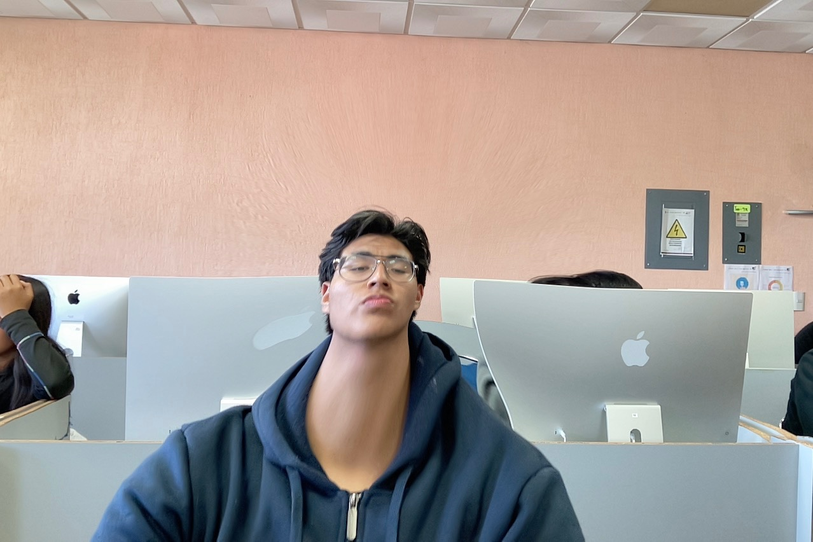
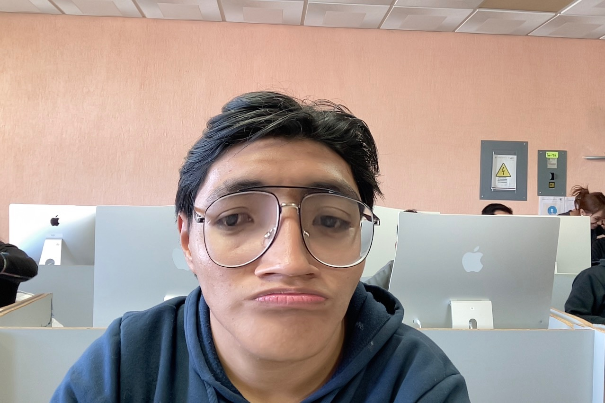

soy una persona amable y con muchos que encontrar Tú eres el usuario o interlocutor que está interactuando con este sistema de inteligencia artificial. Desde un punto de vista técnico y digital, eres la persona que guía la conversación, define los temas de interés y formula las preguntas.Sin embargo, como no tengo acceso a tus datos personales, tu identidad real, tu nombre o tu ubicación por razones de privacidad y seguridad, no puedo darte un perfil específico de quién eres en el mundo físico.Si lo prefieres, podemos explorar este texto desde distintos enfoques según lo que estés buscando:Filosófico o Psicológico: Un texto reflexivo sobre la identidad humana, el autoconocimiento y cómo las personas construyen el "yo" a través de sus experiencias y decisiones.Creativo o Ficción: Un ejercicio donde me des algunas características tuyas (tus gustos, tu profesión o un rol imaginario) y yo redacte una descripción detallada o una historia sobre ti.¿Qué tipo de texto te gustaría que construyamos? Dime si prefieres una reflexión filosófica sobre la identidad, o si quieres darme algunos detalles sobre tus gustos o profesión para escribir una descripción personalizada.Tú